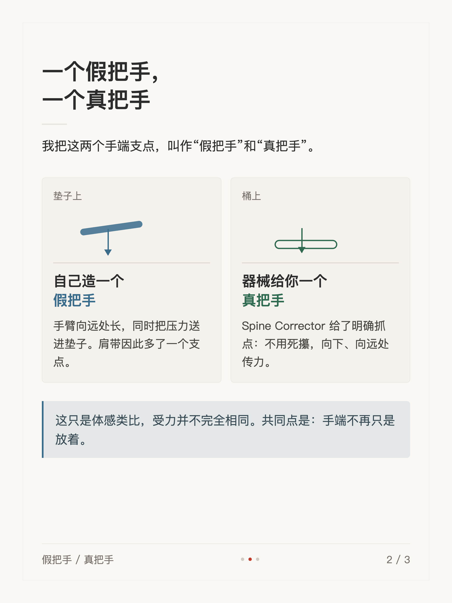
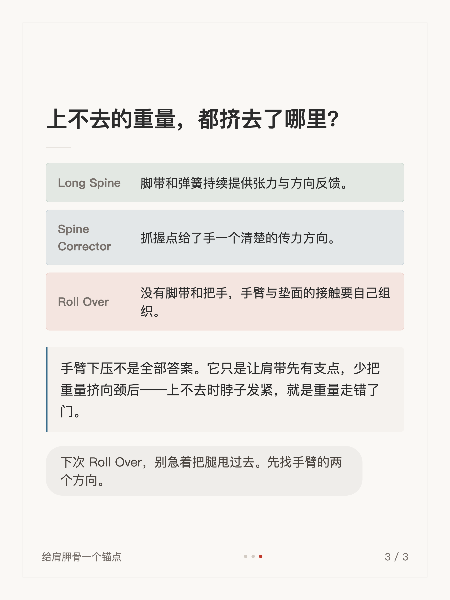

体感短文 #004
普拉提 Roll Over 上不去，先看手

1 / 3

2 / 3

3 / 3
← 左右滑动浏览全部卡片 →
Roll Over 上不去，先别急着怪腹肌——低头看看你的手。Roll Over 里手臂不只往远处够：长度往前，压力往下。手臂向垫子传力，肩带才有一个支点，重量才不会挤向颈后。
这组卡片拆解了“假把手”和“真把手”：垫子上自己造一个支点，器械上让抓点给出传力方向——共同点是，手端不再只是放着。
1 / 3

2 / 3

3 / 3
← 左右滑动浏览全部卡片 →
Roll Over 上不去，先别急着怪腹肌——低头看看你的手。Roll Over 里手臂不只往远处够：长度往前，压力往下。手臂向垫子传力，肩带才有一个支点，重量才不会挤向颈后。
这组卡片拆解了“假把手”和“真把手”：垫子上自己造一个支点，器械上让抓点给出传力方向——共同点是，手端不再只是放着。